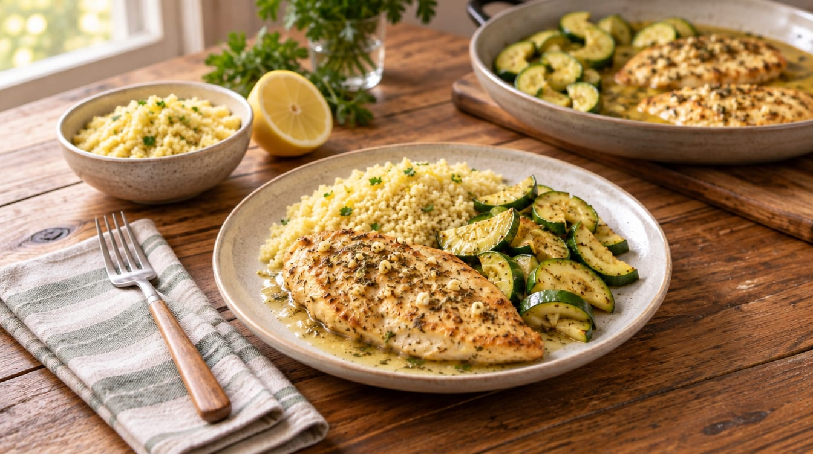
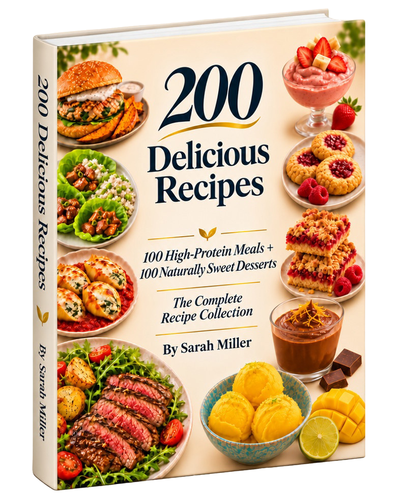
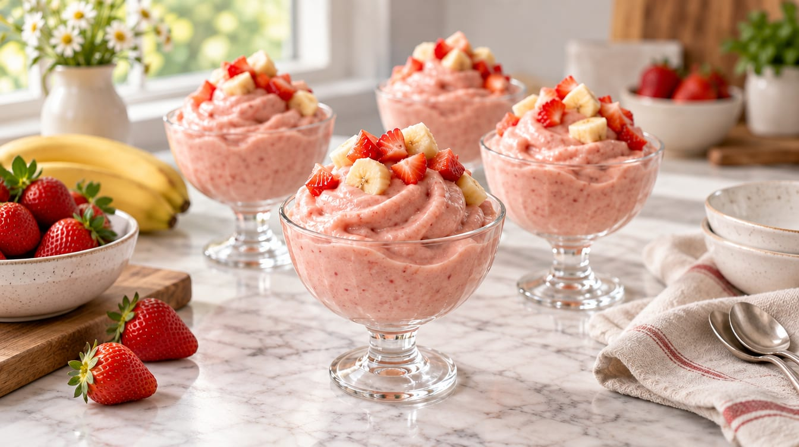
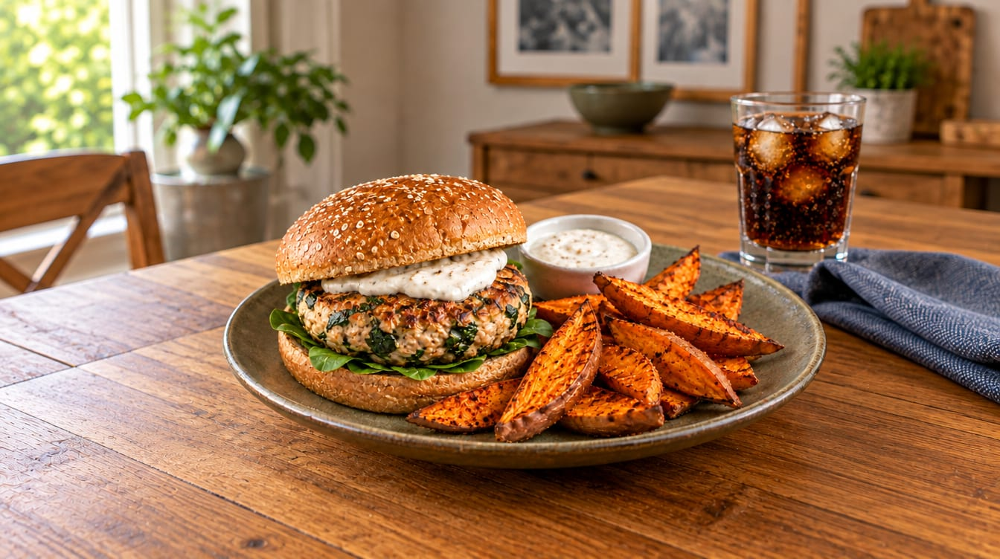
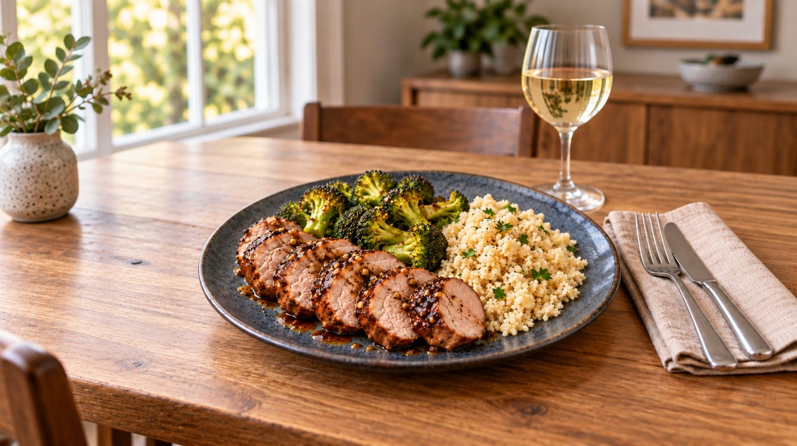
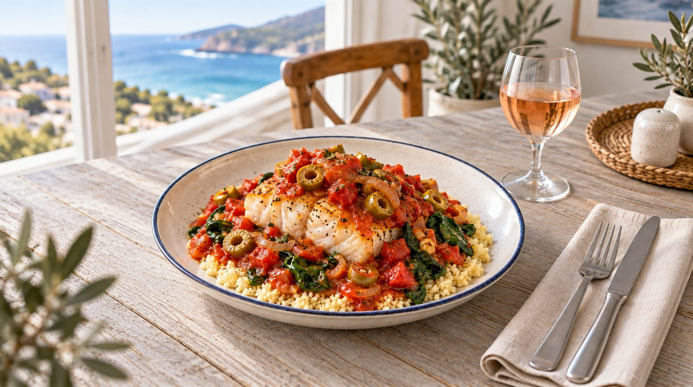
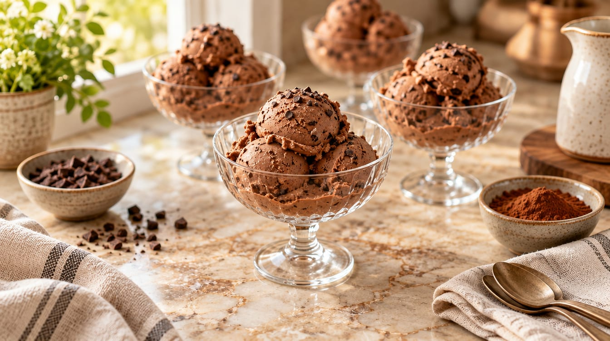
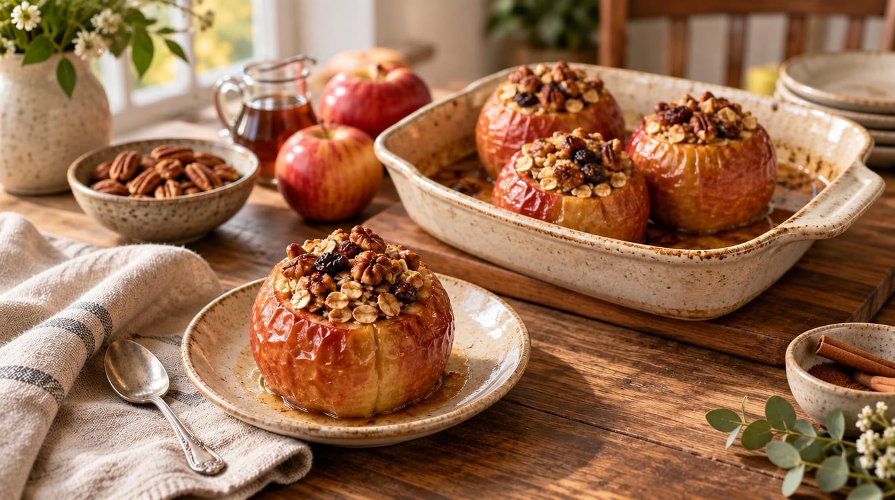
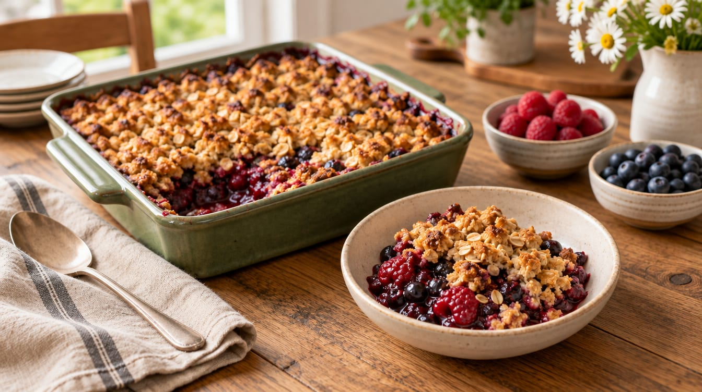
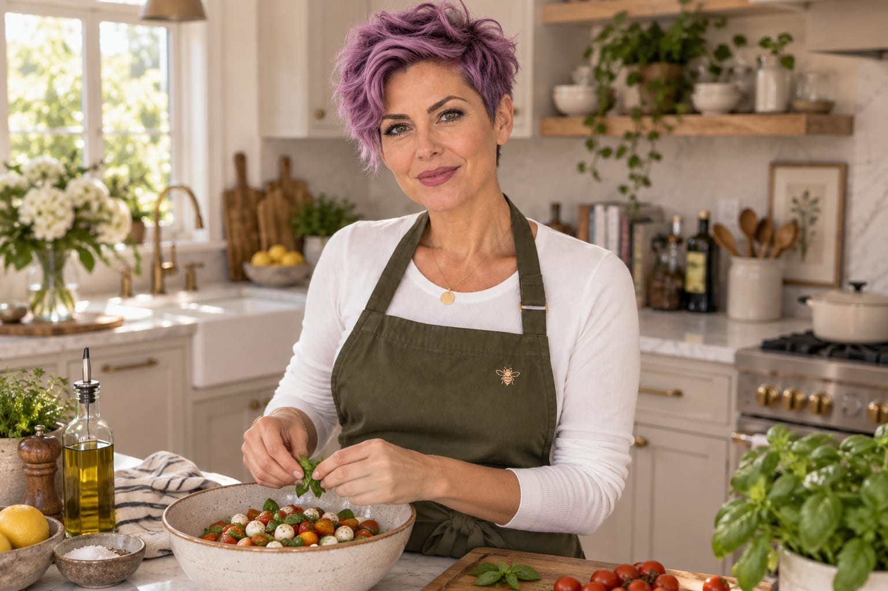

100 High-Protein Meals
From chicken and seafood to meat and vegetarian options, discover easy recipes to add variety to your menu and make meals you’ll want to enjoy again and again.
The Complete Digital Recipe Collection

200 delicious recipes in one digital cookbook — 100 high-protein meals plus 100 naturally sweetened desserts made without refined sugar.
Checkout link pending setup
Plan a satisfying meal, then save room for something sweet. This collection brings both sides of everyday cooking together.

From chicken and seafood to meat and vegetarian options, discover easy recipes to add variety to your menu and make meals you’ll want to enjoy again and again.

Cakes, cookies, fruit desserts, frozen treats, and more — sweetened without refined sugar, with recipes for everyday moments and special occasions.
Explore a selection of recipes from the digital collection and choose which one you’ll make first.






Checkout link pending setup
You’ll find clearly organized ingredients and easy-to-follow instructions, with recipes that will inspire you to get back in the kitchen and try something new — or make your favorites all over again.
Explore meal ideas and desserts without searching through several separate cookbooks.
Ingredient lists and step-by-step directions help you follow along in the kitchen.
Discover new flavors, find your favorites, and feel inspired to make them again and again.
Access your digital recipe collection on your phone, tablet, or computer and choose what to make next.

Meet Sarah Miller
Sarah Miller embodies the essence of Easy Yum: making everyday cooking easier, more flavorful, more varied, and more enjoyable. With protein-packed meals and naturally sweet desserts, this collection invites you to explore new flavors and discover your next favorites.
Discover 100 high-protein meals and 100 naturally sweet desserts to add variety to your menu and enjoy every moment in the kitchen.
200 Delicious Recipes — The Complete Easy Yum Collection by Sarah Miller
Checkout link pending setup
Only the 200-recipe collection is included at this price.
No. This is a digital cookbook, not a printed book. No physical item is shipped.
The collection includes 100 High-Protein Meals and 100 Naturally Sweet Desserts — 200 recipes in total.
No. The collection includes 100 high-protein meals and a separate set of 100 naturally sweetened desserts.
No. The dessert recipes are made without refined sugar, but some ingredients contain naturally occurring sugars or other sweeteners. Check each recipe’s ingredient list.
No. This collection offers general recipe ideas; it is not a personalized diet or medical nutrition plan.
This is a digital purchase. Follow the access instructions provided after checkout.
QA: temporary copy — replace only after a real Whop delivery test.
Please review the Refund Policy for the terms that apply to your purchase.
QA: the linked page is a DRAFT. Publish only with an approved policy.